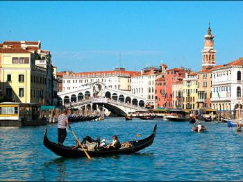
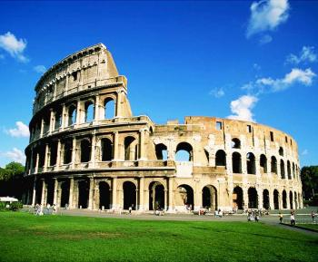
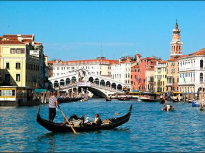

Дестинации
-
Италия

Италия често e наричана страна-музей, тъй като в нея се намира три четвърти от културното наследство на Европа. Италия се състои от много провинции эи градове със самобитна култура, богата история и уникални традиции. Всеки един от тях с право се чувства специален и се гордее с това.Обиколка на Италия ще позволи на всеки турист да посети напълно различни региони на страната: ски курорти в заснежените Алпи и Доломитите, галерии и винарни в Тоскана и Емилия-Романя, луксозни магазини в Рим и Милано, колоритни и комфортни хотели в Иския и Сицилия, както и в курортите Фиуджи и Абано Терме.Тази страна с богата история няма да остави равнодушен всеки турист.Почивка в Италия - това е едно от тези удоволствия, които ще искате да се повтарят отново и отново.
Варианти за почивка
-

Романтична почивка
Венеция - романтичната столица на Европа, която просто е задължително да посетите! Той е прекрасен град за туристически разходки, меден месец, пазаруване и сватбени фотосесии.
-
Семейна почивка
Ски курорти, слънчеви плажове и дори термални извори могат да бъдат посещавани от цялото семейство. Високото ниво на обслужване в хотелите ще направи почивката за вашето семейство комфортна и безгрижна.
-

Разглеждане на забележителности
Италия е невероятно богата на музеи и исторически паметници. Тук можете да посетите прочутия Колизеум и Ватикана и много други.
-
